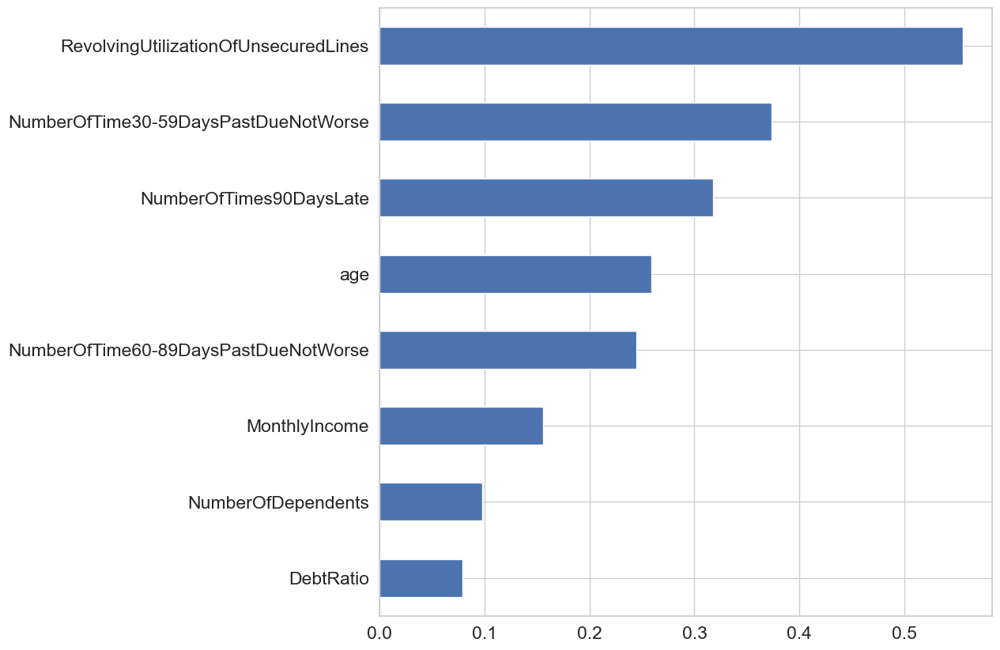
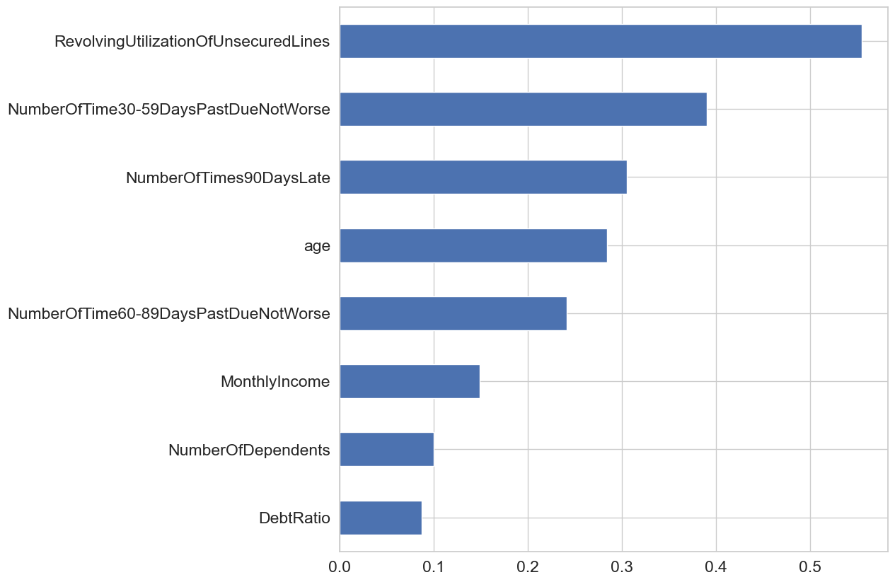
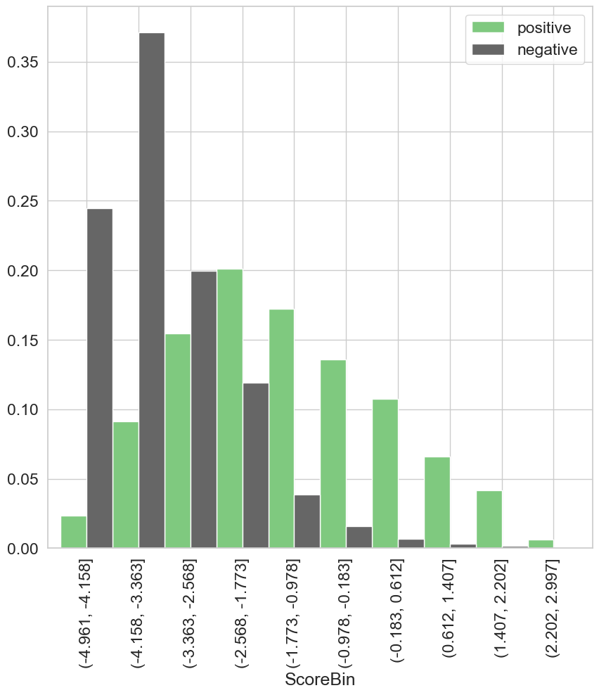

1. General Provisions
-
1.1. Purpose of the Document
This report is made to ensure the continuity of business processes, preserve and share internal organization expertise within the Group, as well as to prove the feasibility and validity of the developed model.
To achieve the goals, the Report provides insights into some essential methodological approaches to modeling.
-
1.2. Goals and Tasks which Require Building a Model
-
___ЦЕЛЬ ПОСТРОЕНИЯ МОДЕЛИ___
-
-
1.3. Document Structure
- Section Model structure contains model description: features, coefficients of the regression model, splitting features into bins.
- Section Validation tests contains information about validation tests.
The report has the following structure:
-
1.4. Model Summary
Key model identifiers are given in Table 1.
Table 1. Model identifiers
Parameter Value Model name / ID ___НАЗВАНИЕ МОДЕЛИ___ Report version 1 Model customer ___ЗАКАЗЧИК___ Name of the Group member and high level department ___ПОДРАЗДЕЛЕНИЕ___ Model developer (if an external developer is involved, it is necessary to indicate Company's name) ___РАЗРАБОТЧИК МОДЕЛИ___ Description and specification of datasets that are used to develop and test the model are presented in Table 2.
Table 2. Summary of data sets used to build the model
Parameter Training set Test set Target event description ___ОПИСАНИЕ ЦЕЛЕВОГО СОБЫТИЯ___ Non-target event description ___ОПИСАНИЕ НЕЦЕЛЕВОГО СОБЫТИЯ___ Observations count in sets 105000 45000 Target events count 7018 3008 Non-target events count 97982 41992 Mean of target in sets 6.68% 6.68% Predictions of the model trained on the training set are shown in Table 3.
Table 3. Model predictions (trained using the training set)
Parameter Training set Test set AUC 85.46% 85.56% Gini 70.92% 71.11% 
2. Model Structure
-
2.1. Coefficients of the Regression Model
Coefficients of the regression model are shown in Table 4.
Table 4. Coefficients of the regression model
Feature name Regression coefficient DebtRatio -1.139524 RevolvingUtilizationOfUnsecuredLines -0.626482 NumberOfTimes90DaysLate -0.532347 NumberOfTime30-59DaysPastDueNotWorse -0.48291 age -0.419146 NumberOfTime60-89DaysPastDueNotWorse -0.370475 MonthlyIncome -0.368744 NumberOfDependents -0.359499 
-
2.2. Splitting Features into Bins and WoE Values in them


3. Validation Tests
-
3.1. Differences in the Number of Missing Values between Training and Test Sets
Statistics related to the number of missing values between training and test sets are shown in Table 5.
Table 5. Missing values
Feature name Number of valid values in the training set Number of valid values in the test set Number of missing values in the training set Number of missing values in the test set Percentage of valid values in the training set Percentage of valid values in the test set Difference in percentage of valid values in sets DebtRatio 105000 45000 0 0 0.00 0.00 0.00 RevolvingUtilizationOfUnsecuredLines 105000 45000 0 0 0.00 0.00 0.00 NumberOfTimes90DaysLate 105000 45000 0 0 0.00 0.00 0.00 NumberOfTime30-59DaysPastDueNotWorse 105000 45000 0 0 0.00 0.00 0.00 age 105000 45000 0 0 0.00 0.00 0.00 NumberOfTime60-89DaysPastDueNotWorse 105000 45000 0 0 0.00 0.00 0.00 MonthlyIncome 84277 35992 20723 9008 19.74 20.02 -0.28 NumberOfDependents 102279 43797 2721 1203 2.59 2.67 -0.08 -
3.2. Classification Quality for Each of the Final Model's features


-
3.3. Confidence Interval for Gini Index
-
95% confidence interval for Gini index:
- - In the training set: (0.7, 0.718)
- - In the test set: (0.696, 0.724)
-
3.4. P-value for Model Coefficients
For features in training set:
Feature name P-value NumberOfDependents 2e-06 MonthlyIncome 0.0 RevolvingUtilizationOfUnsecuredLines 0.0 NumberOfTime30-59DaysPastDueNotWorse 0.0 NumberOfTimes90DaysLate 0.0 age 0.0 NumberOfTime60-89DaysPastDueNotWorse 0.0 DebtRatio 0.0 Intercept_ 0.0 For features in the test set:
Feature name P-value NumberOfDependents 0.001992 MonthlyIncome 1.1e-05 RevolvingUtilizationOfUnsecuredLines 0.0 NumberOfTime30-59DaysPastDueNotWorse 0.0 NumberOfTimes90DaysLate 0.0 age 0.0 NumberOfTime60-89DaysPastDueNotWorse 0.0 DebtRatio 0.0 Intercept_ 0.0 -
3.5. One-dimensional Analysis
Gini for the training set

Gini for the test set

-
3.6. Check for Monotony


-
3.7. Check for Backlash


-
3.8. Check for VIF
Feature name VIF value RevolvingUtilizationOfUnsecuredLines 1.237139 NumberOfTimes90DaysLate 1.236575 NumberOfTime60-89DaysPastDueNotWorse 1.22668 NumberOfTime30-59DaysPastDueNotWorse 1.20735 age 1.158722 NumberOfDependents 1.101896 MonthlyIncome 1.032385 DebtRatio 1.022365 -
3.9. PSI
Total PSI
Feature name PSI value RevolvingUtilizationOfUnsecuredLines 0.000378 MonthlyIncome 0.000264 DebtRatio 0.000229 age 0.00016 NumberOfTime30-59DaysPastDueNotWorse 9e-05 NumberOfTimes90DaysLate 8.6e-05 NumberOfTime60-89DaysPastDueNotWorse 7.2e-05 NumberOfDependents 7.2e-05 PSI for non-target events
Feature name PSI value DebtRatio 0.000252 RevolvingUtilizationOfUnsecuredLines 0.000248 MonthlyIncome 0.000213 age 0.000158 NumberOfTime30-59DaysPastDueNotWorse 8.1e-05 NumberOfDependents 7e-05 NumberOfTimes90DaysLate 3.6e-05 NumberOfTime60-89DaysPastDueNotWorse 3.4e-05 PSI for target events
Feature name PSI value RevolvingUtilizationOfUnsecuredLines 0.00593 age 0.005668 MonthlyIncome 0.002945 NumberOfDependents 0.002925 DebtRatio 0.002874 NumberOfTime30-59DaysPastDueNotWorse 0.00179 NumberOfTimes90DaysLate 0.001167 NumberOfTime60-89DaysPastDueNotWorse 0.00071 Grouping by predictions on the training set (total)

Grouping by predictions of target and non-target events on the training set

Grouping by predictions on the test set (total)

Grouping by predictions of target and non-target events on the test set

PSI by grouped predictions of model
Total PSI 7.5e-05 PSI for non-target events 0.0001 PSI for target events 0.003781
4. Additional Reports
-
4.1. Prediction Bin Statistics
Mean value of the target on the training and test set

Prediction statistics for the training set

ScoreBin count mean std min 25% 50% 75% max (-4.961, -4.556] 6583.0 0.0091 0.0009 0.007 0.0083 0.0091 0.0098 0.0103 (-4.556, -4.158] 17535.0 0.0128 0.0014 0.0104 0.0116 0.0126 0.0139 0.0154 (-4.158, -3.761] 22599.0 0.0187 0.0021 0.0154 0.0168 0.0186 0.0204 0.0227 (-3.761, -3.363] 14399.0 0.0274 0.003 0.0227 0.0247 0.0272 0.0298 0.0335 (-3.363, -2.966] 11108.0 0.0406 0.0045 0.0335 0.0367 0.0403 0.0442 0.049 (-2.966, -2.568] 9507.0 0.0594 0.0062 0.049 0.0542 0.0592 0.0644 0.0712 (-2.568, -2.171] 8643.0 0.0854 0.0087 0.0712 0.0776 0.0852 0.0928 0.1024 (-2.171, -1.773] 4418.0 0.1202 0.0124 0.1024 0.1088 0.1187 0.13 0.1451 (-1.773, -1.376] 2993.0 0.1705 0.0161 0.1451 0.1564 0.169 0.1835 0.2017 (-1.376, -0.978] 2003.0 0.2363 0.0213 0.2017 0.2171 0.2353 0.255 0.2731 (-0.978, -0.581] 1428.0 0.3117 0.025 0.2734 0.2906 0.3083 0.333 0.3587 (-0.581, -0.183] 1079.0 0.4024 0.0267 0.3588 0.3788 0.4007 0.4235 0.4543 (-0.183, 0.214] 807.0 0.503 0.0292 0.4544 0.4769 0.5031 0.5289 0.5532 (0.214, 0.612] 610.0 0.597 0.0278 0.5539 0.5707 0.5961 0.6215 0.6482 (0.612, 1.009] 454.0 0.6915 0.0243 0.6486 0.671 0.6909 0.7129 0.7327 (1.009, 1.407] 309.0 0.7669 0.0203 0.733 0.7475 0.7668 0.784 0.8031 (1.407, 1.804] 273.0 0.8319 0.0159 0.8034 0.8181 0.8309 0.8487 0.8585 (1.804, 2.202] 199.0 0.8785 0.0114 0.8588 0.8708 0.8753 0.8879 0.9002 (2.202, 2.599] 45.0 0.9149 0.0091 0.9018 0.907 0.9142 0.9228 0.9295 (2.599, 2.997] 8.0 0.9387 0.0072 0.9309 0.9348 0.9362 0.9401 0.9524 Prediction statistics for the test set

ScoreBin count mean std min 25% 50% 75% max (-4.961, -4.556] 2884.0 0.0091 0.0009 0.007 0.0083 0.0091 0.0098 0.0103 (-4.556, -4.158] 7509.0 0.0128 0.0014 0.0104 0.0117 0.0126 0.0139 0.0154 (-4.158, -3.761] 9518.0 0.0187 0.0021 0.0154 0.0167 0.0186 0.0204 0.0227 (-3.761, -3.363] 6312.0 0.0273 0.003 0.0227 0.0246 0.0271 0.0297 0.0335 (-3.363, -2.966] 4784.0 0.0405 0.0045 0.0335 0.0366 0.0403 0.0441 0.049 (-2.966, -2.568] 4072.0 0.0592 0.0062 0.049 0.054 0.0589 0.0642 0.0712 (-2.568, -2.171] 3745.0 0.0857 0.0088 0.0712 0.0782 0.0852 0.0931 0.1024 (-2.171, -1.773] 1870.0 0.1198 0.0122 0.1024 0.1085 0.1182 0.1294 0.145 (-1.773, -1.376] 1245.0 0.1707 0.0158 0.1451 0.1569 0.1695 0.1836 0.2016 (-1.376, -0.978] 874.0 0.235 0.021 0.2017 0.2174 0.2336 0.2527 0.2729 (-0.978, -0.581] 581.0 0.3122 0.0239 0.2733 0.2911 0.3083 0.3334 0.3581 (-0.581, -0.183] 496.0 0.4027 0.0275 0.359 0.3784 0.401 0.4265 0.4543 (-0.183, 0.214] 323.0 0.5033 0.0281 0.4549 0.4811 0.5023 0.5287 0.5532 (0.214, 0.612] 266.0 0.5975 0.0275 0.5534 0.5723 0.5962 0.6214 0.6483 (0.612, 1.009] 171.0 0.6924 0.0235 0.6487 0.6738 0.6923 0.7102 0.7328 (1.009, 1.407] 130.0 0.7692 0.02 0.7333 0.7533 0.7679 0.7855 0.8032 (1.407, 1.804] 110.0 0.8338 0.0152 0.8042 0.8213 0.8339 0.8487 0.8584 (1.804, 2.202] 85.0 0.8785 0.0107 0.8594 0.8727 0.8741 0.8864 0.8995 (2.202, 2.599] 21.0 0.9146 0.0076 0.9015 0.9088 0.9141 0.9186 0.9281 (2.599, 2.997] 4.0 0.9352 0.0046 0.9323 0.9329 0.9333 0.9357 0.9421 -
4.2. Correlations by Factors Included in the Model

-
4.3. Scorecard
- __NaN__ - separate group with WoE evaluation
- __NaN_0__ - separate group with WoE = 0
- __NaN_maxfreq__ - added to the most frequent group without WoE evaluation
- __NaN_maxp__ - added to the group with maximum probability without WoE evaluation
- __NaN_minp__ - added to the group with minimum probability without WoE evaluation
- __Small__ - separate group with WoE evaluation
- __Small_nan__ - to the NaN group
- __Small_0__ - separate group with WoE = 0
- __Small_maxfreq__ - added to the most frequent group without WoE evaluation
- __Small_maxp__ - added to the group with maximum probability without WoE evaluation
- __Small_minp__ - added to the group with minimum probability without WoE evaluation
Variable Value WOE COEF POINTS Intercept None None -2.6 -2.6 RevolvingUtilizationOfUnsecuredLines RevolvingUtilizationOfUnsecuredLines <= 0.14 1.32 -0.63 -0.83 RevolvingUtilizationOfUnsecuredLines 0.14 < RevolvingUtilizationOfUnsecuredLines <= 0.3 0.75 -0.63 -0.47 RevolvingUtilizationOfUnsecuredLines 0.3 < RevolvingUtilizationOfUnsecuredLines <= 0.5 0.14 -0.63 -0.09 RevolvingUtilizationOfUnsecuredLines 0.5 < RevolvingUtilizationOfUnsecuredLines <= 0.7 -0.41 -0.63 0.26 RevolvingUtilizationOfUnsecuredLines 0.7 < RevolvingUtilizationOfUnsecuredLines <= 0.85 -0.84 -0.63 0.52 RevolvingUtilizationOfUnsecuredLines 0.85 < RevolvingUtilizationOfUnsecuredLines <= 0.93 -1.09 -0.63 0.68 RevolvingUtilizationOfUnsecuredLines 0.93 < RevolvingUtilizationOfUnsecuredLines <= 1.0 -1.22 -0.63 0.77 RevolvingUtilizationOfUnsecuredLines RevolvingUtilizationOfUnsecuredLines > 1.0 -2.1 -0.63 1.32 RevolvingUtilizationOfUnsecuredLines __NaN_0__ 0 -0.63 0.0 NumberOfTime30-59DaysPastDueNotWorse NumberOfTime30-59DaysPastDueNotWorse <= 0.0 0.53 -0.48 -0.26 NumberOfTime30-59DaysPastDueNotWorse 0.0 < NumberOfTime30-59DaysPastDueNotWorse <= 1.5 -0.88 -0.48 0.43 NumberOfTime30-59DaysPastDueNotWorse 1.5 < NumberOfTime30-59DaysPastDueNotWorse <= 3.5 -1.74 -0.48 0.84 NumberOfTime30-59DaysPastDueNotWorse NumberOfTime30-59DaysPastDueNotWorse > 3.5 -2.48 -0.48 1.2 NumberOfTime30-59DaysPastDueNotWorse __NaN_0__ 0 -0.48 0.0 NumberOfTimes90DaysLate NumberOfTimes90DaysLate <= 0.0 0.4 -0.53 -0.21 NumberOfTimes90DaysLate 0.0 < NumberOfTimes90DaysLate <= 1.5 -1.97 -0.53 1.05 NumberOfTimes90DaysLate NumberOfTimes90DaysLate > 1.5 -2.84 -0.53 1.51 NumberOfTimes90DaysLate __NaN_0__ 0 -0.53 0.0 age age <= 33.5 -0.56 -0.42 0.23 age 33.5 < age <= 38.5 -0.41 -0.42 0.17 age 38.5 < age <= 43.5 -0.31 -0.42 0.13 age 43.5 < age <= 51.5 -0.18 -0.42 0.07 age 51.5 < age <= 55.5 -0.04 -0.42 0.01 age 55.5 < age <= 57.5 0.12 -0.42 -0.05 age 57.5 < age <= 63.5 0.37 -0.42 -0.16 age age > 63.5 0.98 -0.42 -0.41 age __NaN_0__ 0 -0.42 0.0 NumberOfTime60-89DaysPastDueNotWorse NumberOfTime60-89DaysPastDueNotWorse <= 0.0 0.29 -0.37 -0.11 NumberOfTime60-89DaysPastDueNotWorse 0.0 < NumberOfTime60-89DaysPastDueNotWorse <= 1.5 -1.84 -0.37 0.68 NumberOfTime60-89DaysPastDueNotWorse NumberOfTime60-89DaysPastDueNotWorse > 1.5 -2.76 -0.37 1.02 NumberOfTime60-89DaysPastDueNotWorse __NaN_0__ 0 -0.37 0.0 MonthlyIncome MonthlyIncome <= 3332.5 -0.35 -0.37 0.13 MonthlyIncome 3332.5 < MonthlyIncome <= 4600.5 -0.23 -0.37 0.08 MonthlyIncome 4600.5 < MonthlyIncome <= 5558.5 -0.1 -0.37 0.04 MonthlyIncome 5558.5 < MonthlyIncome <= 6666.5 0.01 -0.37 0.0 MonthlyIncome 6666.5 < MonthlyIncome <= 7917.5 0.21 -0.37 -0.08 MonthlyIncome 7917.5 < MonthlyIncome <= 10000.5 0.28 -0.37 -0.1 MonthlyIncome MonthlyIncome > 10000.5 0.46 -0.37 -0.17 MonthlyIncome __NaN__ 0.21 -0.37 -0.08 NumberOfDependents NumberOfDependents <= 0.0 0.13 -0.36 -0.05 NumberOfDependents 0.0 < NumberOfDependents <= 1.5 -0.11 -0.36 0.04 NumberOfDependents 1.5 < NumberOfDependents <= 2.5 -0.2 -0.36 0.07 NumberOfDependents 2.5 < NumberOfDependents <= 3.5 -0.31 -0.36 0.11 NumberOfDependents NumberOfDependents > 3.5 -0.42 -0.36 0.15 NumberOfDependents __NaN__ 0.5 -0.36 -0.18 DebtRatio DebtRatio <= 0.02 0.24 -1.14 -0.28 DebtRatio 0.02 < DebtRatio <= 0.35 0.13 -1.14 -0.14 DebtRatio 0.35 < DebtRatio <= 0.4 0.06 -1.14 -0.07 DebtRatio 0.4 < DebtRatio <= 0.42 0.02 -1.14 -0.02 DebtRatio 0.42 < DebtRatio <= 0.47 -0.07 -1.14 0.08 DebtRatio 0.47 < DebtRatio <= 0.51 -0.08 -1.14 0.09 DebtRatio DebtRatio > 0.51 -0.16 -1.14 0.18 DebtRatio __NaN_0__ 0 -1.14 0.0
Missing values processing legend:
Rare/unknown category processing legend: -
4.4. Feature Selection History
Feature DebtRatio Selected; Gini = 0.08, IV = 0.02 MonthlyIncome Selected; Gini = 0.16, IV = 0.08 NumberOfDependents Selected; Gini = 0.1, IV = 0.04 NumberOfOpenCreditLinesAndLoans Pruned during regression refit NumberOfTime30-59DaysPastDueNotWorse Selected; Gini = 0.37, IV = 0.74 NumberOfTime60-89DaysPastDueNotWorse Selected; Gini = 0.24, IV = 0.6 NumberOfTimes90DaysLate Selected; Gini = 0.32, IV = 0.89 NumberRealEstateLoansOrLines Pruned during regression refit RevolvingUtilizationOfUnsecuredLines Selected; Gini = 0.56, IV = 1.15 age Selected; Gini = 0.26, IV = 0.24 -
4.5. Feature Contribution in the Model
Feature Contribution to ROC AUC DebtRatio 0.0013 MonthlyIncome 0.0008 NumberOfDependents 0.0003 NumberOfTime30-59DaysPastDueNotWorse 0.0173 NumberOfTime60-89DaysPastDueNotWorse 0.0059 NumberOfTimes90DaysLate 0.014 RevolvingUtilizationOfUnsecuredLines 0.0283 age 0.0031